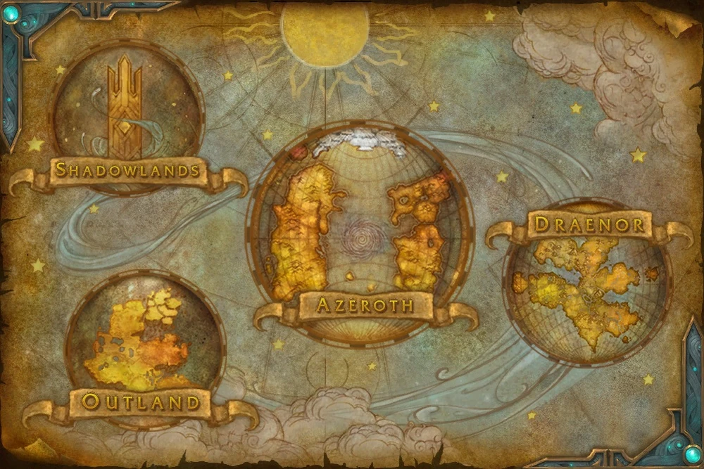
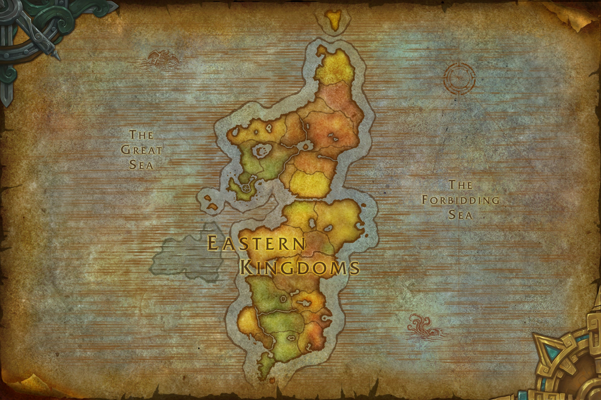
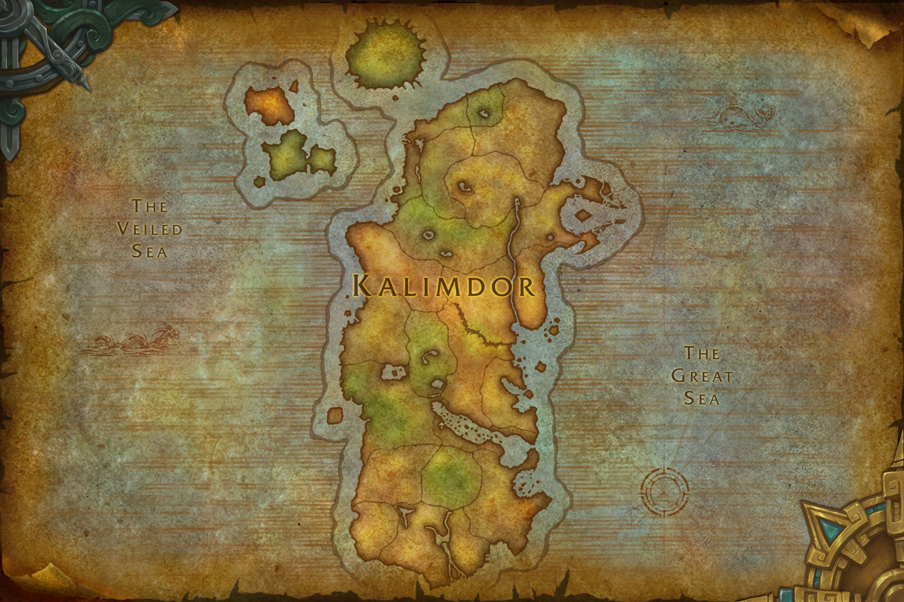

Universo de warcraft
O universo de Warcraft é composto por vários planetas e dimensões, cada um com sua própria história e mitologia. Azeroth é o planeta principal, onde se passa a maior parte da história do jogo. Outros planetas importantes incluem Draenor, Argus e outros mundos míticos e dimensões alternativas. Draenor é o mundo natal dos orcs, onde aconteceu a história da expansão Warlords of Draenor. O planeta foi devastado por guerras e magia negra, mas os jogadores têm a oportunidade de explorar o mundo antes da destruição. Argus é o planeta natal dos draeneis e o local principal onde se passa a história da expansão Legion. É habitado pelos vilões conhecidos como a Legião Ardente, que ameaçam destruir todo o universo de Warcraft. Os jogadores precisam lutar contra a Legião e impedir a invasão de Azeroth. Os Titãs são seres poderosos e antigos que ajudaram a moldar o universo de Warcraft. Eles criaram as raças mais antigas do universo e deram origem aos dragões. A Legião Ardente é uma ameaça aos Titãs, e muitas histórias no universo de Warcraft envolvem os jogadores lutando contra a Legião em nome dos Titãs. Em resumo, o universo de Warcraft é composto por vários planetas e dimensões, cada um com sua própria história e mitologia. Azeroth é o planeta principal, onde se passa a maior parte da história do jogo. Draenor e Argus são outros planetas importantes. A Legião Ardente é uma ameaça aos Titãs e aos habitantes do universo de Warcraft, e os jogadores lutam para proteger seus mundos e suas raças.
Azeroth
Azeroth é o planeta fictício no qual se passa o universo de World of Warcraft. É um mundo fantástico cheio de magia, aventura e conflitos entre as facções rivais da Aliança e da Horda. O mundo de Azeroth é dividido em vários continentes, cada um com sua própria geografia, fauna e história. O mundo é habitado por muitas raças diferentes, incluindo humanos, elfos, anões, orcs, trolls, entre outras. Cada raça tem sua própria cultura, história e habilidades únicas, o que pode afetar a forma como os jogadores escolhem jogar e interagir com o mundo do jogo. O mundo de Azeroth é rico em história e mitologia, com muitos personagens icônicos e histórias envolventes. A história do jogo se desenrola através de uma série de expansões, cada uma introduzindo novas áreas, personagens, raças, classes e histórias para os jogadores explorarem. Em resumo, Azeroth é um mundo fictício de fantasia no qual se passa o universo de World of Warcraft. É habitado por muitas raças diferentes, cada uma com sua própria história, cultura e habilidades únicas, e é dividido em vários continentes com sua própria geografia e fauna.
Reinos do leste
Reinos do Leste é um dos continentes principais do universo de Warcraft e é conhecido por ser o lugar onde se originaram muitas das raças da Aliança. Ele é caracterizado por florestas densas, montanhas, lagos e cidades históricas. A história de Reinos do Leste está intimamente ligada à história da Aliança, que teve suas raízes no continente. Foi em Reinos do Leste que a raça dos humanos se estabeleceu e fundou o reino de Stormwind, que se tornaria um dos principais membros da Aliança. Ao longo da história de Warcraft, Reinos do Leste foi o palco de muitos conflitos entre a Aliança e a Horda, bem como outras ameaças como os mortos-vivos e os dragões negros. Como um dos principais continentes do jogo, Reinos do Leste oferece muitas áreas para explorar e aventuras para os jogadores, especialmente aqueles que jogam como membros da Aliança. Algumas das principais cidades e regiões de Reinos do Leste que estão conectadas à Aliança incluem Stormwind, Ironforge (casa dos anões), Gnomeregan (casa dos gnomos), Darnassus (casa dos elfos noturnos) e o território dos enanos ferro-velho. A Aliança também tem uma forte presença em Reinos do Leste através de suas bases militares e fortalezas, como Fortaleza da Honra em Hellfire Peninsula.
Kalindor
Kalimdor é um dos continentes principais do universo de Warcraft e é conhecido por ser o lugar onde se originaram muitas das raças da Horda. Ele é caracterizado por vastas florestas, desertos, montanhas e um litoral acidentado. A história de Kalimdor está intimamente ligada à história da Horda, que teve suas raízes no continente. Foi em Kalimdor que a raça dos orcs chegou pela primeira vez, conduzida pelo bruxo Gul'dan. Eles foram escravizados pela Legião Ardente e forçados a lutar contra os elfos da noite, que protegiam Kalimdor. Mais tarde, os orcs se libertaram do controle da Legião e formaram a Horda com outras raças, como os trolls e os taurens. A Horda continuou a ter uma presença significativa em Kalimdor, com suas principais cidades e bases militares localizadas lá. Ao longo da história de Warcraft, Kalimdor foi o palco de muitos conflitos entre a Horda e a Aliança, bem como outras ameaças como a Legião Ardente e os antigos deuses malignos. Como um dos principais continentes do jogo, Kalimdor oferece muitas áreas para explorar e aventuras para os jogadores, especialmente aqueles que jogam como membros da Horda.